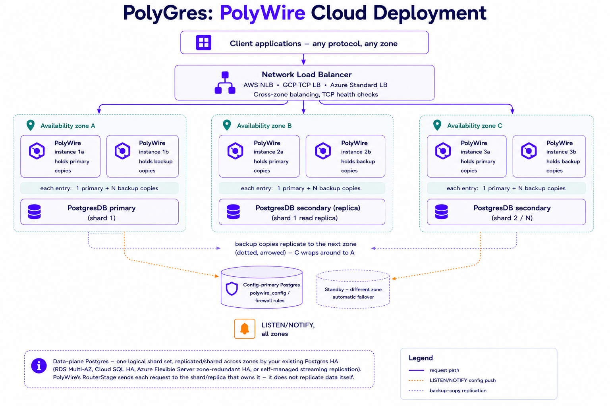
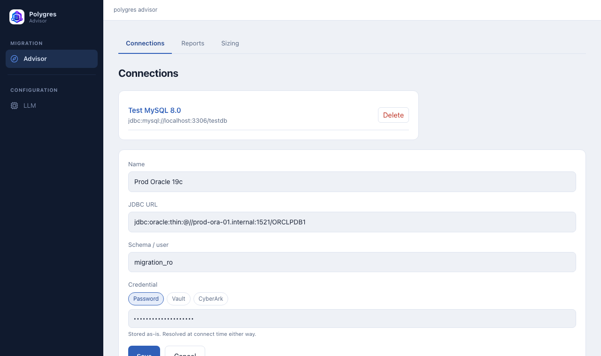
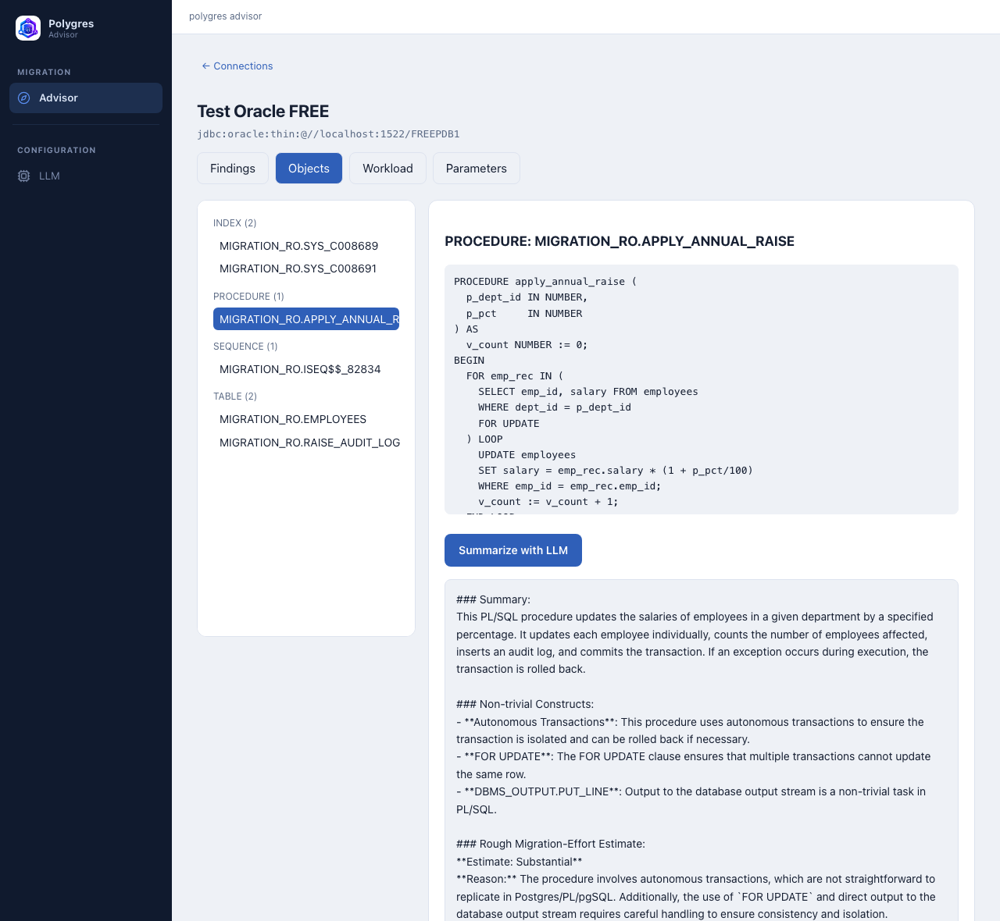
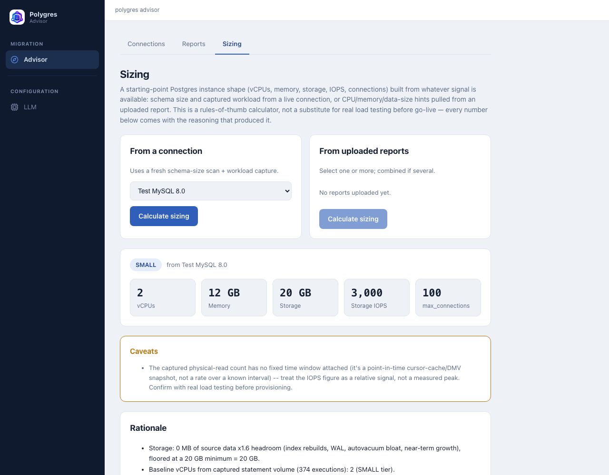

PolyGres
A secure, scalable, AI-ready Postgres gateway for the enterprise — built for AI agents and applications alike — and the tool that tells you how hard it'll be to get everything else onto Postgres in the first place.
PolyWire
A secure, scalable, intelligent Postgres gateway for the enterprise — built for a world where AI agents, not just applications, need governed access to your data. PolyWire speaks Oracle, MySQL, SQL Server, Postgres, MongoDB, DynamoDB, Amazon SQS, OpenSearch, gRPC, and MCP on one side, and real Postgres on the other, with a SQL firewall, ACL, QoS admission control, and live observability in front of every one of them. Migration compatibility is one use case among several — not the whole story.
On this page
Outcomes#
Simple architecture
One gateway for all protocols and data sources.
Strong security
Centralized policies, auth, and SQL firewall.
Max performance
Smart routing, QoS control, caching, and rollups.
Scale elastically
Add shards, regions, tenants without re-architecting.
Lower costs
Better resource utilization and reduced complexity.
Operational excellence
Deep observability, audit, and real-time insights.
Easy to test
Write tests against each protocol's own real client library — psql, mongosh, boto3, python-oracledb, opensearch-py, and more — no PolyWire-specific SDK to learn first.
Use cases#
- Governed access for AI agentsAn MCP frontend lets AI agents and modern service architectures query Postgres directly — through the same SQL firewall, ACL, and QoS controls as every other client, not a separate, unguarded path to your data.
- A single, secure gateway across multiple data sourcesOne admin surface — SQL firewall, ACL, routing, QoS, live metrics — in front of traffic that used to be spread across five different databases' own tooling, each with its own access model.
- Connection pooling for PostgresEvery backend is fronted by a bounded connection pool — many client connections share a small, fixed set of real Postgres connections, the same problem PgBouncer solves, built into the same gateway that's already translating and firewalling the traffic.
- Horizontal sharding, by real bound valuesRoute by schema, predicate, or a real bound parameter value — decoded from each protocol's own wire format across Postgres, Oracle, SQL Server, and MySQL, not just SQL text — with genuine cross-shard merge (not concatenation) for aggregates, sorted/paginated hits, and DynamoDB/MongoDB/SQS/OpenSearch sharding alongside SQL. See "Sharding" below.
- Distributed transactions (XA)Coordinate a transaction across multiple backend databases from a client that only knows how to talk to one, for the cases a single-database commit isn't enough.
- Query result cachingAn embedded distributed cache, opt-in per table, serves repeat exact-key reads without a round trip to Postgres — no application-side caching code to write or invalidate.
- Pre-aggregated rollups for analytics queriesDefine a GROUP BY/aggregate summary once — PolyWire keeps a real materialized table fresh on a schedule and rewrites matching client queries to read from it automatically, via a real SQL query planner, not a hand-maintained second copy your application has to know about.
- Standardizing on one databaseDifferent teams' applications speak different protocols against different databases. PolyWire lets every one of them land on the same Postgres, without every team rewriting its data layer first.
- Permanent compatibility shimSome client code isn't worth touching — an old MongoDB driver, a legacy ORM tied to a specific dialect. Run PolyWire indefinitely and let it keep speaking that protocol forever while everything actually lives in Postgres.
- Mid-migration bridgeRun PolyWire while PolyAdvisor (or another migration tool) moves schema and data behind the scenes — old client code keeps working unmodified throughout the cutover, no coordinated "flag day" rewrite required.
Quick start — point it at a real Postgres backend via POLYWIRE_*:
docker run \
-p 19090:19090 -p 15432:15432 -p 13306:13306 -p 11521:11521 \
-p 14333:14333 -p 27017:27017 -p 18000:18000 -p 9324:9324 \
-e POLYWIRE_HOST=<host> \
-e POLYWIRE_PASSWORD=<password> \
ghcr.io/polygres26/polywire:latest
That works as-is against an existing on-prem Postgres. If you need examples of how to connect PolyWire to a specific managed provider instead — Supabase, Amazon RDS, Google Cloud SQL, Azure Database for PostgreSQL, or Oracle Cloud Infrastructure's Database with PostgreSQL — see CONNECTING.md.
Architecture#
![PolyWire architecture: ten client protocols — OraWire, MySQL, SQL Server, Postgres wire, MongoDB, DynamoDB, Amazon SQS, gRPC, MCP, and OpenSearch — feed one shared eight-stage pipeline: Frontends, FirewallStage (ACL/IP allow-deny, PROXY protocol v2/XFF — security first, policy-driven access control), RouterStage (shard/backend selection — shard scatter-gather, HA failover to standby), QosControlStage (concurrency control, throttling, priority queues), DialectTranslationStage, RollupStage, CacheStage, and StatsCollectorStage, each stage paired with the customer outcome it drives (multi-protocol single entry point, security-first access control, shard-aware smart routing, protected resources/SLAs, protocol-agnostic consistency, reduced load via pre-aggregation, lower latency, real-time observability), backed by a Postgres control plane (polywire_config/polywire_firewall_rules with hot-reload and standby failover via LISTEN/NOTIFY), executing against a primary Postgres and any number of additional shards, with a key-outcomes panel calling out simple architecture, strong security (centralized policies, auth, and SQL firewall), max performance, elastic scaling, lower costs, and operational excellence](docs/architecture.png)
What gRPC is, on this diagram: the one protocol here that isn't emulating a
foreign database — it's PolyWire's own native driver protocol, a thin, stateless
request/response API (one Execute(sql, params) call in, one result back, no
session handshake to maintain) for a client written specifically against PolyWire rather
than against Postgres, MySQL, or any of the others. It runs through the exact same shared
pipeline as every emulated protocol — same firewall, same QoS, same metrics — so choosing
it over pgwire buys a simpler client integration, not a separate, less-governed path to
your data.
Admin console#
![PolyWire's admin console: a Metrics dashboard showing live protocol traffic across all nine protocols including gRPC and OpenSearch shown as their own distinct rows, reads/writes per second, top SQL by cost, per-tool MCP call counts and error rates, traffic by backend (routing/sharding target), and a cache-hit-vs-Postgres RTT breakdown covering every protocol including OpenSearch, with a sidebar grouped into four real labeled sections — Monitoring (Metrics, Topology), Security (SQL Firewall, ACL, OAuth), Traffic (Backends, Queues, Data Explorer, Router Rules — where shard/routing targets are configured, QoS), and Configuration (LLM)](docs/admin-polywire.png)
Cache hit vs. Postgres round trip, per protocol#
The same admin console tracks this per wire protocol: how long a cache hit takes against a real Postgres read or write. Measured on a local loopback deployment (client, PolyWire, and Postgres all on one machine), 30+ samples per cell — every protocol's connections were opened together and warmed with an equal number of throwaway calls each before any sample was taken, then measured in round-robin order (one call per protocol, repeated) rather than one protocol's whole run before the next. An earlier pass here that measured each protocol in its own sequential block produced skewed numbers — whichever protocol ran first absorbed the JVM's own warm-up cost — so it's corrected below. The point isn't the absolute millisecond figures, which shrink further over a real network, it's that the cache consistently wins on every protocol PolyWire speaks, without any application-side caching code, and that a real Postgres round trip costs about the same regardless of which wire protocol asked for it.
| Protocol | Cache hit | Postgres read | Postgres write | Cache speedup |
|---|---|---|---|---|
| Postgres (pgwire) | 0.08 ms | 0.53 ms | 0.83 ms | 6.7× |
| SQL Server (mssqlwire) | 0.08 ms | 0.60 ms | 0.93 ms | 8.0× |
| MySQL (mywire) | 0.08 ms | 0.74 ms | 0.73 ms | 9.3× |
| Oracle (orawire) | 0.08 ms | 0.57 ms | 0.60 ms | 7.6× |
| MongoDB (mongowire) | 0.10 ms | 0.61 ms | 1.48 ms | 5.9× |
| DynamoDB (dynamowire) | 0.07 ms | 0.60 ms | 0.95 ms | 9.0× |
| OpenSearch (oswire) | — | 1.24 ms | 1.13 ms | — |
Workload, exactly: for the four SQL protocols, SELECT * FROM t against
a cached row (cache hit), the same query against an uncached row (Postgres read), and
UPDATE t SET id = id (Postgres write) — issued through each protocol's real
driver (psycopg2, python-tds/pymssql, python-oracledb, the MySQL CLI), not a synthetic
benchmark harness. For MongoDB, findOne by _id (mongowire's
cache only covers exact-_id lookups) against a cached vs. uncached document,
and insertOne for the write. For DynamoDB, GetItem by primary
key (same exact-key-only caching) against a cached vs. uncached item, and
PutItem for the write. For OpenSearch, a term _search
and an index (upsert) call via the real opensearch-py client —
oswire has no result cache at all (see the rollups/caching architecture above; every
_search/_doc call hits Postgres directly), so its cache-hit and
speedup cells are genuinely blank, not omitted data.
Sharding: by real bound values, across every protocol that has one#
PolyWire routes by a real bound parameter value — not just SQL text — across
Postgres, Oracle, SQL Server, and MySQL wire protocols, decoding each protocol's
own native binary bind-parameter encoding (Postgres extended-query, Oracle,
SQL Server sp_executesql, MySQL COM_STMT_EXECUTE) so a client's
PreparedStatement value — tenant_id, customer_id,
whatever the shard key is — reaches the router correctly, whichever of the four protocols
the client happens to speak. A client that sends the same value as a plain SQL literal
(psql, simple-query mode, an ORM that doesn't bind parameters) still routes correctly too,
via literal-value matching — the feature degrades to "still correct," not "silently
wrong." Hash, consistent-hash (150 virtual nodes per backend, minimizing what actually
moves when the shard set changes), range, and list strategies are all real, configured via
the same POLYWIRE_ROUTER_VALUE_SHARD_RULES knob regardless of which protocol
or bind style the traffic arrives as.
A cross-shard SQL query — COUNT/SUM/AVG/
MIN/MAX, with or without GROUP BY, and
ORDER BY/LIMIT/OFFSET — is genuinely merged across
shards, not concatenated: AVG is a real weighted average (not an
average-of-averages), and a global LIMIT caps the merged result, not each
shard's own contribution. A query shape outside that set is refused with a clear error
rather than silently mis-merged.
Sharding isn't SQL-only. DynamoDB (dynamowire) hashes by the real DynamoDB
partition key. MongoDB (mongowire) hashes by _id for a
{_id: ...}-shaped query; anything broader scatter-gathers. SQS
(sqswire) hashes by queue name (one queue lives entirely on one backend — there's no
per-message key to shard by independently). OpenSearch (oswire) hashes documents
by doc_id, and a structured _search — hits, pagination, and
terms/metric aggregations including a real weighted avg, even
nested inside a terms bucket — merges across shards the same way SQL's does.
k-NN (vector) and hybrid search on a sharded collection are refused with a clear error
rather than quietly searching only one shard — a real, disclosed boundary, not a silent
gap.
What sharding doesn't do: there's no elastic/online resharding anywhere — changing the shard set doesn't migrate data, queues, or documents already placed under the old set. Consistent hashing minimizes what would need to move; nothing moves it automatically today.
SQS: enqueue vs. dequeue#
sqswire has no result cache — a queue's whole point is that every message is a real state
change, nothing is safely repeatable from a cache — so instead of the cache-hit breakdown
above, it reports the two halves of the queue lifecycle separately. Workload:
SendMessage (enqueue) and ReceiveMessage (dequeue) via boto3's
SQS client, 40 samples each, warmed and round-robined the same way as the table above.
sqswire runs the AWS-style JSON-over-HTTP API real SQS also uses, not a raw binary wire
protocol like the other six — the modest premium over the table above (roughly 1.5–2x a
Postgres round trip via pgwire, not the much larger gap an earlier, less careful
measurement pass here showed) is HTTP request/response framing and JSON parsing on every
call, not the queue logic itself: SendMessage and ReceiveMessage are each a single SQL
statement against Postgres, same as the tables above.
| Protocol | Enqueue (SendMessage) | Dequeue (ReceiveMessage) |
|---|---|---|
| Amazon SQS (sqswire) | 1.18 ms | 1.25 ms |
Rollups: pre-aggregated tables, kept fresh automatically#
A rollup is a real Postgres table PolyWire creates and keeps current for you — the
materialized result of a GROUP BY/aggregate query you define once, not a view
and not something your application maintains by hand. Define it in YAML (a
POLYWIRE_ROLLUP_DEFINITIONS_FILE, or the same field via the admin API):
rollups:
- name: daily_order_totals
backend: primary
source_table: orders
group_by:
- customer_id
- order_date
aggregations:
- "SUM(amount) AS total_amount"
- "COUNT(*) AS order_count"
refresh_interval_minutes: 15
max_staleness_minutes: 30
Every 15 minutes, PolyWire runs exactly the SQL you'd write by hand to keep this current —
DROP TABLE IF EXISTS polywire_rollup_daily_order_totals; then
CREATE TABLE polywire_rollup_daily_order_totals AS SELECT customer_id, order_date,
SUM(amount) AS total_amount, COUNT(*) AS order_count FROM orders GROUP BY customer_id,
order_date; — against the real orders table, on the backend named
primary. max_staleness_minutes is the cutoff past which PolyWire
stops trusting that table for acceleration until the next refresh succeeds.
Acceleration is automatic and always on for a fresh, matching rollup — there's no
separate switch to flip. PolyWire embeds a genuine SQL parser, validator, and
relational query planner inside its own pipeline. When a client sends an aggregate query
against orders, PolyWire parses it, checks whether a fresh rollup's source
table is mentioned, and rewrites the query to read from
polywire_rollup_daily_order_totals instead whenever its
materialized-view matcher can prove that substitution is valid for that specific query
shape — defining the rollup above is turning rewriting on for it, nothing else to
configure. Your application still just queries orders — it never has to know
the rollup exists. If the rollup is stale, doesn't apply, or the rewrite can't be proven
safe for that query, PolyWire falls straight through to the real table unchanged — a
rollup can only ever make a matching query faster, never make an unmatched one wrong.
Which protocols this applies to: rollup acceleration lives in the same shared
pipeline as the SQL firewall and dialect translation, so it covers every protocol that
sends a SQL statement through that pipeline — pgwire, mywire, mssqlwire, orawire,
gRPC, and MCP's execute_sql tool. mongowire, dynamowire, and sqswire
don't build SQL text at all — a Mongo find or a DynamoDB GetItem
goes straight from that protocol's own store layer to Postgres, so there's no SQL
statement for a rollup to match against and no rewriting happens for those three today.
Observability: CloudWatch, Datadog, New Relic, Grafana, and more#
PolyWire exposes two real, independent export surfaces — a Prometheus-format
/metrics endpoint and a periodic OTLP metrics push, over either gRPC
(:4317, the default) or HTTP (:4318, set
POLYWIRE_OTEL_PROTOCOL=http) — and how each platform gets that data differs
by platform. Some scrape /metrics directly, some accept an OTLP push with no
extra hop, and some (CloudWatch, Azure Monitor, GCP Cloud Monitoring, AppDynamics) need an
OpenTelemetry Collector in between to translate into their native API. OTLP/HTTP exists
for the networks gRPC doesn't reach cleanly — corporate proxies and L7 load balancers that
only forward plain HTTP/HTTPS. This is metrics only today — no traces or logs — and
PolyWire doesn't set a service.name resource attribute, so a receiving
platform identifies its data by the polywire_* metric-name prefix, not a
service tag.
![PolyWire observability integration diagram: PolyWire exposes /metrics :19090, OTLP/gRPC :4317, and OTLP/HTTP :4318. A green Prometheus-scrape path runs through a scrape agent to Self-hosted Grafana, Grafana Cloud, and Datadog's Prometheus check. A blue direct-OTLP-push path runs straight to New Relic, Datadog's native OTLP ingest, and Grafana Cloud's OTLP gateway. An orange dashed via-Collector path runs through an OpenTelemetry Collector to AWS CloudWatch, Azure Monitor, GCP Cloud Monitoring, and AppDynamics](docs/observability.png)
| Env var | Default | What it does |
|---|---|---|
| POLYWIRE_OTEL_PROTOCOL | grpc | grpc or http |
| POLYWIRE_OTEL_ENDPOINT | http://localhost:4317 | Collector/backend endpoint (defaults to :4318 when protocol=http) |
| POLYWIRE_OTEL_EXPORT_INTERVAL_MS | 5000 | Push interval |
| POLYWIRE_OTEL_HEADERS | — | Comma-separated key=value request headers (e.g. an API key) |
| POLYWIRE_METRICS_PORT | 19090 | Prometheus /metrics scrape port |
| POLYWIRE_ADMIN_TOKEN | — | Bearer auth on /metrics, if set |
Self-hosted Grafana
Point a Prometheus server (or Grafana Agent/Alloy) at /metrics and add it as a Grafana data source — no collector, no OTLP.
Grafana Cloud
Either scrape /metrics and remote_write it in, or push OTLP straight to Grafana Cloud's own OTLP gateway.
Datadog
The Datadog Agent can scrape /metrics as a Prometheus check, or take a native OTLP push on recent Agent versions — either way, no collector required.
New Relic
Push OTLP straight to otlp.nr-data.net:4317 with your API key in POLYWIRE_OTEL_HEADERS. No collector hop.
AWS CloudWatch
No native OTLP receiver — run an OpenTelemetry Collector (e.g. ADOT) with the awsemf exporter in between.
Azure Monitor / App Insights
Same shape — a Collector with the azuremonitor exporter and your connection string.
GCP Cloud Monitoring
A Collector with the googlecloud (or googlemanagedprometheus) exporter forwards into Cloud Monitoring.
AppDynamics
Historically agent/controller-based rather than an open metrics receiver — route through a Collector into Cisco Cloud Observability.
Multi-AZ deployment#

Security#
Every layer below is real, running code — not roadmap. Each item states its actual scope plainly, including the parts that are opt-in or narrower than the feature name might suggest; a security page that only lists what's strong isn't one you should trust.
- SQL firewallAllow/deny rules matched on statement type, table (glob), and a SQL regex, stored in Postgres and pushed live to every node over LISTEN/NOTIFY — no restart to change a rule. Stacked-query injection (
SELECT ...; DROP TABLE ...) is blocked unconditionally, independent of any rule. Rules are process-wide today, not yet per-tenant or per-role, and the only actions are allow/deny — no rate-limit or log-only action. - Connection ACLCIDR allow/deny lists, fail-closed once any rule is configured, enforced at accept time on every TCP wire protocol, every HTTP endpoint, and gRPC. PROXY protocol v2 preserves the real client IP behind a load balancer. Configure
POLYWIRE_ACL_TRUSTED_PROXIESfor HTTP endpoints — without it, the firstX-Forwarded-Forhop is trusted, which a client in front of an untrusted proxy could spoof. - QoS admission controlA real token-bucket limiter — rate, burst, and max-wait, configurable per workload class (query/write/ddl/txn) — plus shedding when a backend's connection pool is saturated. Today the limiter is per-workload-class and process-wide, not yet per-tenant or per-client.
- AuthenticationSet
POLYWIRE_AUTH_MODE=postgres_rolesand PolyWire verifies real Postgres roles — SCRAM-SHA-256 and md5, read live frompg_authid— for the Postgres and SQL Server wire protocols (needs a backend role grantedSELECT ON pg_authidto read role hashes — deliberately not a superuser, since a superuser bypasses row-level security unconditionally, which matters if you're relying on RLS below). The Oracle wire protocol authenticates differently — its O5LOGON handshake needs a real plaintext password server-side to verify the client's own encrypted challenge response, so it can't be satisfied from Postgres's hashed role verifiers the way SCRAM can; setPOLYWIRE_AUTH_CREDENTIALS(auser=pass;user2=pass2list) to give it real, distinguishable per-caller identities instead. Without either, pgwire/mssqlwire/orawire all fall back to one shared username/password, and MySQL only supports that shared credential today. The admin API and MCP endpoint separately support OIDC/JWT bearer tokens with live JWKS rotation, off by default until an issuer is configured. - TLS everywhereIn-band TLS for Postgres, MySQL, and SQL Server wire protocols (standard client
sslmode/encryption settings just work), a dedicated TCPS port for Oracle, TLS for gRPC, and mutual TLS between cluster nodes for cache traffic — all from one PKCS12 keystore. Client-certificate authentication isn't implemented yet; TLS today verifies the server to the client, not the client to the server. - Secrets managementA backend password can be a
vault:orcyberark:reference instead of a literal — resolved fresh from HashiCorp Vault (KV v1/v2) or CyberArk CCP on every connection, so a rotated secret takes effect without a restart. Credential fields in the config table can additionally be encrypted at rest with AES-256-GCM — setPOLYGRES_ENCRYPTION_KEY; without it, those fields are stored as plain text, and PolyWire logs a warning at startup saying so. - Admin API authenticationThe config/backends/queues/topology API is bearer-token authenticated (
POLYWIRE_ADMIN_TOKEN, constant-time compare) and fails closed — unset the token and the whole surface is unreachable, not open. The one exception:/metricsitself isn't behind the admin token (only ACL/OAuth, both off by default) — put it behind your own network boundary if Prometheus scrape access shouldn't be public.
Row-level security, for real: under POLYWIRE_AUTH_MODE=postgres_roles
(Postgres, SQL Server) or POLYWIRE_AUTH_CREDENTIALS (Oracle), every login sets
polywire.user_id as a session GUC on the backend connection before each
statement — filtering is enforced by your own Postgres RLS policies
(USING (owner_user = current_setting('polywire.user_id'))-style), not by
PolyWire rewriting SQL. This holds even fronted by the Oracle wire protocol: orawire's SQL
translation always executes against Postgres, so the same Postgres RLS mechanism applies —
no separate Oracle VPD/SYS_CONTEXT setup needed, since there's no real Oracle
database in this path for VPD to run against. One requirement RLS makes non-negotiable:
PolyWire's own backend role must not be a superuser or the table owner — either bypasses
every RLS policy unconditionally, no matter what the session GUC says. Grant it
SELECT on pg_authid and on the tables it serves instead. Every
login — success or failure, real identity or shared credential — is recorded to a
tamper-evident audit log, readable live via the bearer-token-authenticated
GET /api/audit admin route. Column-masking and attribute-based row filtering
beyond native RLS (the AccessControlStage engine) are real, reviewed code, not
yet wired to a config surface — out of scope until an identity-to-attribute mapping exists.
MySQL and the DynamoDB/MongoDB/SQS/OpenSearch wire protocols don't yet propagate identity
into RLS at all — every session there still shares one backend credential.
Planned and unplanned outages#
A Postgres backend going down for a patch shouldn't take your application down with it — whether you chose the timing or not. PolyWire tells the two cases apart deliberately: a planned switchover can afford to wait for a clean cutover; an unplanned failure can't wait for anything.
- Planned switchover
POST /api/backends/{name}/drainstops routing new statements to a backend in favor of a configured fallback (a same-region replica or another region's backend — the mechanism doesn't distinguish the two), then waits (bounded bygraceMs) for its connection pool to empty before closing it. It also waits for the fallback to reach real zero replication lag before reporting success — a planned window has no outage forcing an immediate cutover, so it actually waits for a clean one. Refuses (409) to drain a backend with any unresolved in-doubt XA transaction against it, and fans the call out to every other node in the cluster (not just whichever one received the HTTP request) so a switchover is genuinely cluster-wide, not single-node. - Unplanned failoverA background prober re-checks every backend's connectivity (
POLYWIRE_BACKEND_HEALTH_CHECK_SECONDS, default 15s) and automatically redirects new statements to a backend's fallback the moment it stops responding — no operator, no admin call. SetPOLYWIRE_FAILOVER_MAX_LAG_SECONDSto name the replication lag (the data loss) you're willing to accept from an outage nobody scheduled; exceeding it doesn't block the failover — refusing to redirect would only trade a bounded loss for a total outage — but it does log loudly, exactly what a real alert should page on. - Crash-safe recovery, even after a switchoverAn in-doubt two-phase-commit branch records the exact backend (jdbc URL, user, password) it was prepared against, not just its name — so if that name gets repointed to a different physical target between the crash and the next restart (a switchover, a credential rotation, a config edit), startup recovery still reconnects to where the branch actually lives, not wherever the name currently resolves to.
Every wire protocol participates — Postgres, SQL Server, MySQL, Oracle, MongoDB, DynamoDB, SQS, and OpenSearch alike. Drain/undrain, fallback redirection, and auto-failover all resolve backends through the same registry lookup every protocol's store now shares. A backend that starts serving traffic for the first time after a switchover — a fallback that's a genuinely separate Postgres, not necessarily a replica — gets its schema/catalog tables created there automatically the first time routing actually lands on it, not never.
Pricing
Same PolyWire, same protocols, same capabilities — Developer and Enterprise differ on scale and commercial rights, not features. Nothing that makes PolyWire what it is — SQL translation, the firewall, sharding, QoS, caching, HA/failover — is held back for a paid tier: an evaluation on Developer proves the exact architecture you'd run in production.
Developer
$0 / forever
For evaluation, development, demos, and migration testing.
- All ten protocols — Postgres, MySQL, Oracle, SQL Server, MongoDB, DynamoDB, SQS, OpenSearch, gRPC, MCP
- SQL translation, dialect rewrite, and rollup acceleration
- SQL firewall, connection ACL, and every policy engine
- Routing and sharding, all strategies
- QoS admission control
- Query result caching
- Prometheus
/metricsand OTEL export - HA, config propagation, and planned/unplanned failover — up to 3 instances
- Up to 25 concurrent client connections per instance
- Up to 3 Postgres backends
- Community support only
- Not licensed for commercial production use
Enterprise
Contact us
For production deployments of any size.
- Everything in Developer, unrestricted
- Unlimited concurrent client connections
- Unlimited PolyWire instances
- Unlimited Postgres backends
- Full throughput, no admission-control ceiling beyond what you configure
- Licensed for commercial production use
- Enterprise support
Developer's connection/instance/backend limits are real, locally-enforced caps — not a time-limited trial and not a phone-home metering service. They're enough to run applications, demos, benchmarks, and a genuine three-instance HA/failover test; a meaningful production deployment will reach them quickly by design.
PolyAdvisor
Tool for moving off Oracle/MySQL/MariaDB/SQL Server onto Postgres: assess how hard the migration is, then bridge your existing application to Postgres while you do it.
Point PolyAdvisor at a source database — or upload a performance report if you can't share a live connection — and it gives you a concrete migration-difficulty score, a breakdown of exactly what's driving that score, and a Postgres sizing recommendation. No guesswork, no black box: the score is rules-based and reproducible, not LLM-generated, so running it twice against the same database gives you the same answer. Once you know what you're migrating and how hard it'll be, PolyWire (above) is what lets your application keep running against its original protocol while the migration actually happens.
Two ways to get an assessment#
- Connect a databaseA read-only connection profiles the real schema, feature usage, and query workload directly — no data leaves your database, only metadata and query statistics. Deterministic: run it twice, get the same score.
- Upload a performance reportDrop in an Oracle AWR report, a MySQL performance report, or a SQL Server DMV/Query Store export, and an LLM reads it for you. A genuinely different kind of signal than a live connection — labeled as such everywhere it shows up, never presented as equivalent.
What you get#
- Migration difficulty score and tierReproducible and rules-based — run it twice against the same database, get the same score and the same itemized breakdown behind it.
- Feature inventoryPL/SQL packages, triggers, procedures, partitioning, database links, scheduled jobs, and more, each weighted by real migration cost.
- Schema, workload, and parameter browsingDrill into any table, view, procedure, or function's real definition; a captured-query-workload summary (top SQL by cost, executions, buffer gets); and the source database's full configuration parameter list, filterable — all read-only, all from the same connection.
- Downloadable findings report (PDF)Generated live from the current scan, built for sharing with a stakeholder who'll never open the app.
- Postgres sizing recommendationvCPUs, memory, storage, and IOPS from a live connection's schema size and captured workload — or from an uploaded report's signals — with the caveats and the reasoning behind every number spelled out, not just the numbers themselves.
- PL/SQL summarization (Oracle sources)An LLM explains what a package or procedure actually does in plain English, with an optional second-opinion "judge" model for a review pass — advisory only, layered on top of the rules-based score, never replacing it.
Where PolyAdvisor is still early: saved connection credentials are stored as-is today — encryption at rest is planned but not yet built, so treat this like any other tool you'd point at a database with a password in a config file. There's a single shared admin account, no per-user roles or SSO yet. Worth knowing before you point it at anything you wouldn't otherwise put in a plaintext config.
Quick start:
docker run -p 8090:8090 \
-v polyadvisor-data:/data \
ghcr.io/polygres26/polyadvisor:latest
Connecting, exploring, and reviewing PL/SQL with an LLM's help#
A connection is a JDBC URL, a schema/user, and a credential — plain password today, or a reference into Vault or CyberArk if you'd rather not store the secret in PolyAdvisor at all. Once it's saved, Objects lists everything that user can see, grouped by type and (for a multi-schema connection) owner-qualified so a package in one schema is never confused for one in another. Selecting a routine shows its real source, pulled live from the database, not a cached copy.

What the LLM step actually does, precisely: select a package, procedure, or
function and PolyAdvisor can ask an LLM to explain it — a plain-English summary of what
it does, a bullet list of the specific constructs that are non-trivial to port to
Postgres (cursor locking, DBMS_OUTPUT, autonomous transactions, and the
like), and a trivial/moderate/substantial effort estimate with its reasoning. This is a
reviewer's aid, not a code generator — it does not emit PL/pgSQL, and nothing it produces
feeds back into the deterministic score above. Runs entirely local by default (no API
key, nothing leaves the machine) against a small on-box model, or against an external
provider if you configure one on the LLM page.

FOR UPDATE loop, DBMS_OUTPUT, exception handling) and the LLM's live output below it — a summary, the specific constructs that need manual attention when porting to Postgres, and an effort estimate. Explanation and risk-flagging, not automated translation.Admin console#


Common questions
- Does my application need to change to use PolyWire?No — each client protocol (Postgres, MySQL, Oracle, SQL Server, MongoDB, DynamoDB, SQS, OpenSearch) is spoken for real on the wire; your existing driver connects exactly as it always has, unaware PolyWire (not the database it thinks it's talking to) is on the other end.
- Is PolyWire's sharding real, or just SQL text matching?Real: it decodes each protocol's own native binary bind-parameter encoding (not just SQL text) to route by an actual bound value, and merges cross-shard aggregates/sorted results centrally rather than concatenating per-shard results. See "Sharding" above for exactly which protocols and query shapes are covered.
- Does PolyWire support row-level security?Yes, for the Postgres, SQL Server, Oracle, and MySQL wire protocols — a real per-caller identity is propagated into a Postgres session GUC, and your own Postgres RLS policies do the filtering. See "Security" above for the exact authentication requirements this needs.
- What happens if the backend Postgres needs planned maintenance?A drain API stops routing new statements to that backend in favor of a configured fallback, waits for a real zero-replication-lag cutover, and only then confirms the switchover is safe to proceed — see "Planned and unplanned outages" above.
- Can PolyWire connect to Supabase, Amazon RDS, Google Cloud SQL, Azure Database for PostgreSQL, or Oracle OCI?Yes — see CONNECTING.md for a worked example and the real provider-specific gotchas (Supabase's pooler, mandatory TLS on Azure/OCI, network allowlisting on RDS/Cloud SQL/OCI) for each.
- Does PolyWire cache query results?Yes — an embedded distributed cache, opt-in per table, serves repeat exact-key reads without a round trip to Postgres, with no application-side caching code to write or invalidate. See "Cache hit vs. Postgres round trip, per protocol" above for real measured numbers across every protocol.
- What security features does PolyWire actually have wired in, not just documented?A SQL firewall (stacked-query injection blocked unconditionally), connection ACL (CIDR allow/deny, PROXY protocol v2), QoS admission control, real Postgres-role or per-user authentication, TLS everywhere, Vault/CyberArk secrets management, and bearer-token admin API auth — each scoped honestly, including what's opt-in or narrower than the feature name might suggest. See "Security" above for the exact scope of each.
- Is PolyWire free to use?Yes — the Developer edition is free forever with every protocol and every feature enabled, capped at 25 concurrent connections per instance, 3 instances, and 3 Postgres backends, for evaluation and development use. See "Pricing" above for the full comparison against Enterprise.
- Is PolyAdvisor's migration score generated by an LLM?No — it's rules-based and reproducible: running it twice against the same database gives the same score, with a line-by-line, plain-English breakdown of exactly what's driving it.
Contact
Questions about either tool, or something not working right? We read everything sent here.
Product questions, bug reports, feature requests — for either PolyWire or PolyAdvisor. Include what you were trying to do and, for a bug, what you expected vs. what happened. Goes straight to the team, no email address to copy or scrape.